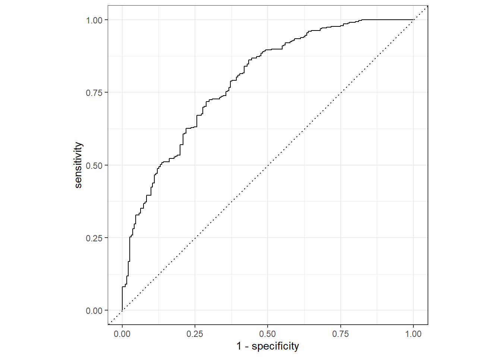

Loading required package: Matrix
Attaching package: 'Matrix'
The following objects are masked from 'package:tidyr':
expand, pack, unpack
Loaded glmnet 4.1-6
SwollenLymphNodes ChestCongestion ChillsSweats NasalCongestion Sneeze Fatigue
1 Yes No No No No Yes
2 Yes Yes No Yes No Yes
3 Yes Yes Yes Yes Yes Yes
4 Yes Yes Yes Yes Yes Yes
5 Yes No Yes No No Yes
6 No No Yes No Yes Yes
SubjectiveFever Headache Weakness CoughIntensity Myalgia RunnyNose AbPain
1 Yes Yes Mild Severe Mild No No
2 Yes Yes Severe Severe Severe No No
3 Yes Yes Severe Mild Severe Yes Yes
4 Yes Yes Severe Moderate Severe Yes No
5 Yes Yes Moderate None Mild No No
6 Yes Yes Moderate Moderate Moderate No No
ChestPain Diarrhea EyePn Insomnia ItchyEye Nausea EarPn Hearing Pharyngitis
1 No No No No No No No No Yes
2 No No No No No No Yes Yes Yes
3 Yes No No Yes No Yes No No Yes
4 No No No Yes No Yes Yes No Yes
5 No No Yes Yes No Yes No No Yes
6 Yes Yes No No No Yes No No Yes
Breathless ToothPn Vision Vomit Wheeze BodyTemp
1 No No No No No 98.3
2 No No No No No 100.4
3 Yes Yes No No No 100.8
4 No No No No Yes 98.8
5 No No No No No 100.5
6 Yes No No No Yes 98.4
## Splitting the data with outcome Nausea distributed evenly in training and testing dataset.seed(123)nausea_split=initial_split(exp_data,strata = Nausea)nausea_train=training(nausea_split)nausea_test=testing(nausea_split)
Creating workflow and fitting model using all predictors
Warning: Returning more (or less) than 1 row per `summarise()` group was deprecated in
dplyr 1.1.0.
ℹ Please use `reframe()` instead.
ℹ When switching from `summarise()` to `reframe()`, remember that `reframe()`
always returns an ungrouped data frame and adjust accordingly.
ℹ The deprecated feature was likely used in the yardstick package.
Please report the issue at <https://github.com/tidymodels/yardstick/issues>.

predict(nausea_fit,nausea_test)
# A tibble: 183 × 1
.pred_class
<fct>
1 No
2 No
3 No
4 Yes
5 No
6 No
7 No
8 No
9 Yes
10 Yes
# … with 173 more rows
Overall, the model built and trained based on all predictors has a higher roc_auc than that built and trained based on the main predictor RunnyNose. Specifically, the a roc_auc of 0.72 was obtained when the full-model predicted testing data and 0.79 when it predicted the training data. In contrast, a roc_auc close to 0.5 (no use) was achieved when only the main predictor was used in the model.